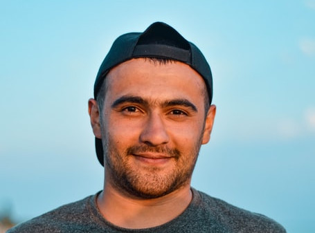
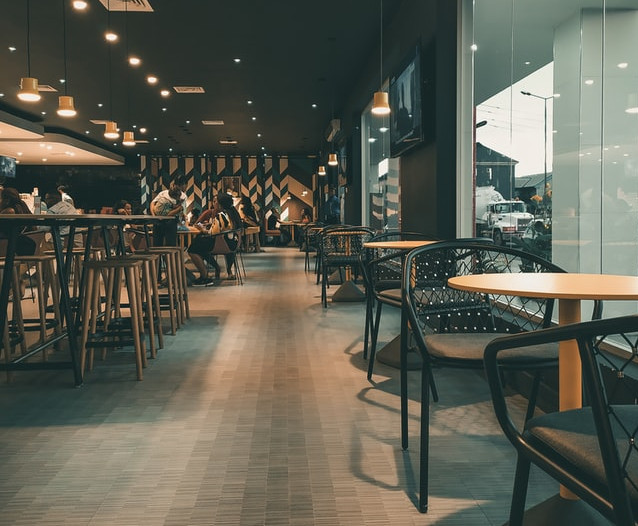

O que dizem alguns de nossos clientes:
Cristina da Silva
Nossa! Depois que provei a primeira vez a costela bovina no restaurante, fiquei apaixonada! Ao menos uma vez ao mês almoço lá!

Alex Oliveira
Restaurante muito limpo (visitei a cozinha e é tudo muito organizado). O Cristiano visita cada mesa e nos atende de forma muito carinhosa.
Maria Correia
Simplismente um churrasco delicioso! Vale cada centavo, super recomendo!
Faça já sua reserva!
(24) 3332-4455
Rua Vieira, 106, Centro - Barra Mansa - RJ
